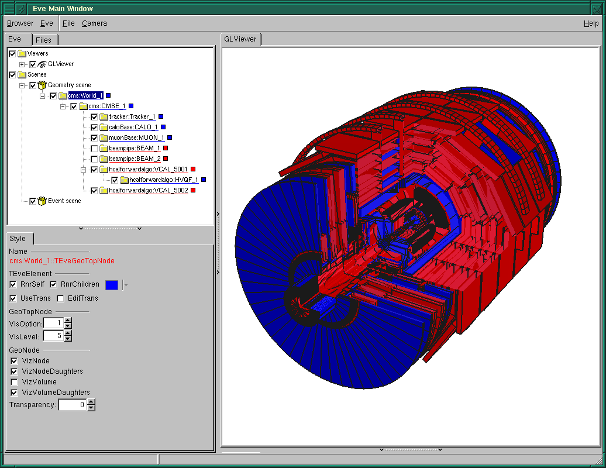
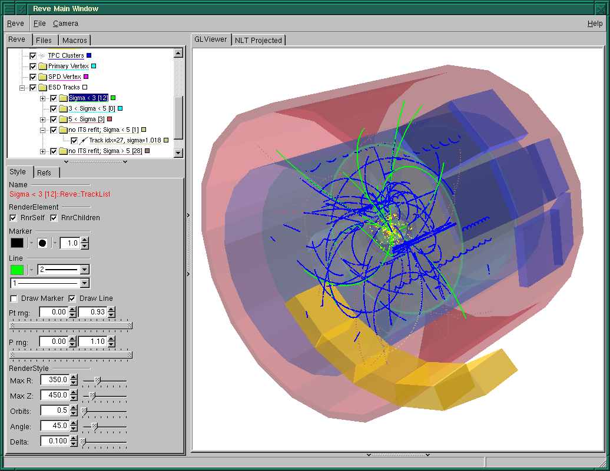
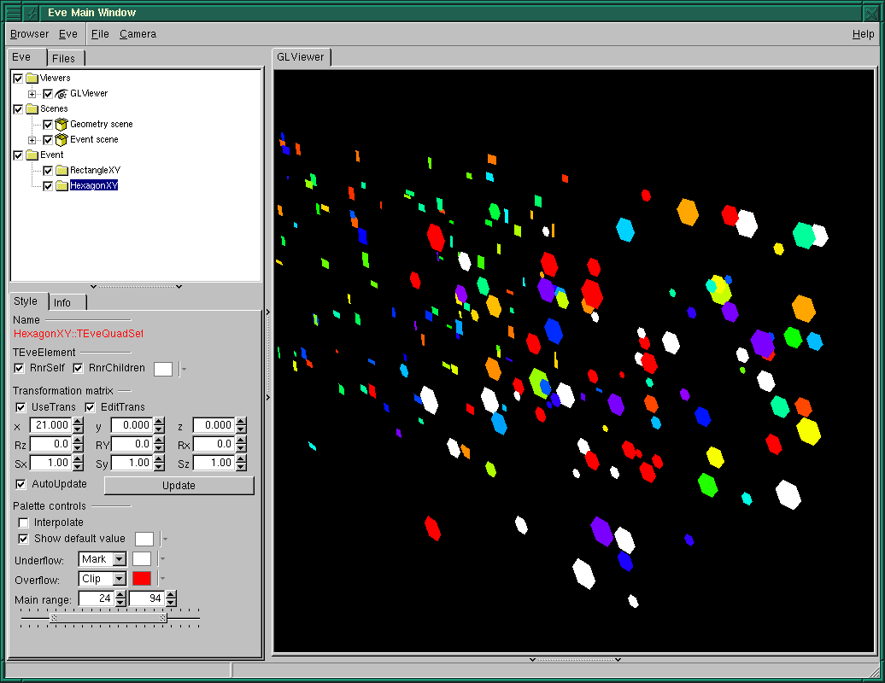
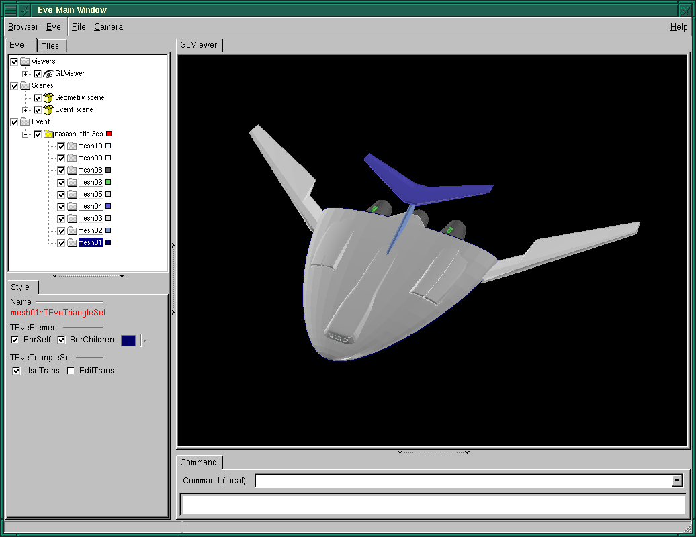

Index of GRAF3D/EVE
The Event Display classes
Eve is a ROOT module based on experiment-independant part of the ALICE event display developed in cooperation between ALICE offline project and ROOT during the last two years. It has been used in ALICE for more than a year to perform high-level event visualization, debugging of simulation and reconstruction code as well as for raw-data visualization.
Papers describing Eve (older ones still using the old name - Reve):
- EVE - Event Visualization Environment of the ROOT framework, presented at ACAT 2008.
- Event Visualization Environment of the ALICE experiment, presented at ROOT Workshop 2007.
- Raw-data display and visual reconstruction validation in ALICE, presented at CHEP 2007.
Eve is built on top of ROOT's GUI, GL and GED infrastructure and delivers the following main features:
- Base-classes for representation of visual objects that can be presented in list-tree views, object-editors and rendered via OpenGL (TEveElement and sub-classes).
- Application manager class TEveManager for top-level management of elements, GUI components, geometries and events;
- Classes for presentation of full TGeo geometries
(TEveGeoNode and TEveGeoTopNode) as well as of
simplifed geometries via extraction of shape-data
(TEveGeoShape).

- Classes for presentation of trajectories or tracks
(TEveTrack, TEveTrackPropagator) and hits or
clusters (TEvePointSet, TEvePointSetArray).

- Base-classes for presentation of raw-data or digits
(TEveDigitSet, TEveQuadSet and
TEveBoxSet). A collection of objects can be assigned
common signal-to-color mapping (TEveRGBAPelette) and
surrounding frame (TEveFrameBox).

- Base-classes for 2D projections with dynamically controllable
fish-eye magnification of the vertex region
(TEveProjectionManager and
TEveProjection). Tracks, points and geometries can be
projected automatically. R-phi and Rho-z projections are
currently supported.

- TriangleSet class for presentation of generic
triangle meshes.

Class Index
Jump to
T TEveC TEveCaloV TEveD TEveF TEveG TEveGr TEveL TEveP TEvePl TEvePr TEveR TEveRh TEveS TEveTr TEveTran TEveV TEveVe TEveVi- TEve3DProjection 3D scaling "projection"
- TEveArrow Class for gl visualisation of arrow.
- TEveArrowEditor GUI editor for TEveArrow.
- TEveArrowGL GL renderer class for TEveArrow.
- TEveBox 3D box with arbitrary vertices.
- TEveBoxGL GL renderer class for TEveBox.
- TEveBoxProjected Projection of TEveBox.
- TEveBoxProjectedGL GL renderer class for TEveBoxProjected.
- TEveBoxSet Collection of 3D primitives (fixed-size boxes, boxes of different sizes, or arbitrary sexto-epipeds); each primitive can be assigned a signal value and a TRef.
- TEveBoxSetGL GL-renderer for TEveBoxSet class.
- TEveBrowser Specialization of TRootBrowser for Eve.
- TEveCalo2D Class for visualization of projected calorimeter event data.
- TEveCalo2DGL GL renderer class for TEveCalo2D.
- TEveCalo3D Class for 3D visualization of calorimeter event data.
- TEveCalo3DEditor GUI editor for TEveCalo3DEditor.
- TEveCalo3DGL GL renderer class for TEveCalo.
- TEveCaloData Manages calorimeter event data.
- TEveCaloData::SliceInfo_t Slice info for histogram stack.
- TEveCaloDataHist Manages calorimeter TH2F event data.
- TEveCaloDataVec Manages calorimeter event data.
- TEveCaloLego Class for visualization of calorimeter histogram data.
- TEveCaloLegoEditor GUI editor for TEveCaloLego.
- TEveCaloLegoGL GL renderer class for TEveCaloLego.
- TEveCaloLegoOverlay GL-overaly control GUI for TEveCaloLego.
- TEveCaloViz Base-class for visualization of calorimeter eventdata.
- TEveCaloVizEditor GUI editor for TEveCaloVizEditor.
- TEveChunkManager Vector-like container with chunked memory allocation.
- TEveChunkManager::iterator
- TEveCluster Reconstructed cluster (also used in VSD).
- TEveCompositeFrame Composite frame containing eve-window-controls and eve-windows.
- TEveCompositeFrameInMainFrame Eve-composite-frame that is contained in one tab of a TGTab.
- TEveCompositeFrameInPack Eve-composite-frame that is contained in a TGPack.
- TEveCompositeFrameInTab Eve-composite-frame that is contained in one tab of a TGTab.
- TEveCompound Container for managing compounds of TEveElements.
- TEveCompoundProjected Projected TEveCompund container.
- TEveDigitSet Base-class for storage of digit collections; provides transformation matrix (TEveTrans), signal to color mapping (TEveRGBAPalette) and visual grouping (TEveFrameBox).
- TEveDigitSetEditor Editor for TEveDigitSet class.
- TEveDigitSetGL GL renderer class for TEveDigitSet.
- TEveElement Base class for TEveUtil visualization elements, providing hierarchy management, rendering control and list-tree item management.
- TEveElement::TEveListTreeInfo Structure agregating data for a render element image in a list tree.
- TEveElementEditor Editor for TEveElement class.
- TEveElementList List of TEveElement objects with a possibility to limit the class of accepted elements.
- TEveElementListProjected Projected TEveElementList.
- TEveElementObjectPtr TEveElement with external TObject as a holder of visualization data.
- TEveEventManager Base class for event management and navigation.
- TEveException Exception-type thrown by Eve classes.
- TEveFrameBox Description of a 2D or 3D frame that can be used to visually group a set of objects.
- TEveFrameBoxGL GL-renderer for TEveFrameBox class.
- TEveGDoubleValuator Composite GUI element for selection of range (label, two number-entries and double-slider).
- TEveGListTreeEditorFrame Composite GUI frame for parallel display of a TGListTree and TEveGedEditor.
- TEveGTriVecValuator Composite GUI element for setting three numerical values (label, three number-entries).
- TEveGValuator Composite GUI element for single value selection (supports label, number-entry and slider).
- TEveGValuatorBase Base class for composite GUI elements for setting of numeric values.
- TEveGedEditor Specialization of TGedEditor for proper update propagation to TEveManager.
- TEveGedNameFrame Top name-frame used in EVE.
- TEveGedNameTextButton Button for GED name-frame.
- TEveGeoManagerHolder Exception-safe wrapper for temporary setting of gGeoManager variable.
- TEveGeoNode Wrapper for TGeoNode that allows it to be shown in GUI and controlled as a TEveElement.
- TEveGeoNodeEditor Editor for TEveGeoNode class.
- TEveGeoPolyShape A shape with arbitrary tesselation for visualization of CSG shapes.
- TEveGeoShape Wrapper for TGeoShape with absolute positioning and color attributes allowing display of extracted TGeoShape's (without an active TGeoManager) and simplified geometries (needed for NLT projections).
- TEveGeoShapeExtract Globally positioned TGeoShape with rendering attributes and an optional list of daughter shape-extracts.
- TEveGeoShapeProjected
- TEveGeoTopNode Top-level TEveGeoNode with a pointer to TGeoManager and controls for steering of TGeoPainter.
- TEveGeoTopNodeEditor Editor for TEveGeoTopNode class.
- TEveGridStepper Provide discrete position coordinates for placement of objects on regular grids.
- TEveGridStepperEditor Editor for TEveGridStepper class.
- TEveGridStepperSubEditor Sub-editor for TEveGridStepper class.
- TEveHit Monte Carlo hit (also used in VSD).
- TEveJetCone Short description.
- TEveJetConeEditor GUI editor for TEveJetCone.
- TEveJetConeGL GL renderer class for TEveJetCone.
- TEveJetConeProjected Projection of TEveJetCone.
- TEveJetConeProjectedGL GL renderer class for TEveJetCone.
- TEveLegoEventHandler A GL event handler class. Swiches perspective or orthographic camera.
- TEveLine An arbitrary polyline with fixed line and marker attributes.
- TEveLineEditor Editor for TEveLine class.
- TEveLineGL GL-renderer for TEveLine class.
- TEveLineProjected Projected replica of a TEveLine.
- TEveListTreeItem Special llist-tree-item for Eve.
- TEveMCRecCrossRef Cross-reference of sim/rec data per particle (also used in VSD).
- TEveMCTrack Monte Carlo track (also used in VSD).
- TEveMacro TMacro wrapper (attempting to fix issues with different macro loading and execution schemes).
- TEveMagField Abstract interface to magnetic field
- TEveMagFieldConst Interface to constant magnetic field.
- TEveMagFieldDuo Interface to magnetic field with two different values depending of radius.
- TEveManager Eve application manager.
- TEveManager::TExceptionHandler Exception handler for Eve exceptions.
- TEveManager::TRedrawDisabler Exception-safe EVE redraw-disabler.
- TEvePad Internal TEveUtil pad class (sub-class of TPad) overriding handling of updates and 3D-viewers.
- TEvePadHolder Exception-safe wrapper for temporary setting of gPad variable.
- TEveParamList Eve element to store generic configuration information.
- TEveParamList::BoolConfig_t
- TEveParamList::FloatConfig_t
- TEveParamList::IntConfig_t
- TEveParamListEditor GUI editor for TEveParamList.
- TEvePathMark
- TEvePathMarkD
- TEvePathMarkF
- TEvePathMarkT<double> Template for a special point on a track: position/momentum reference, daughter creation or decay.
- TEvePathMarkT<float> Template for a special point on a track: position/momentum reference, daughter creation or decay.
- TEvePlot3D Short description.
- TEvePlot3DGL GL renderer class for TEvePlot3D.
- TEvePointSelector TSelector for direct extraction of point-like data from a Tree.
- TEvePointSelectorConsumer Virtual base for classes that can be filled from TTree data via the TEvePointSelector class.
- TEvePointSet Set of 3D points with same marker attributes; optionally each point can be assigned an external TRef or a number of integer indices.
- TEvePointSetArray Array of TEvePointSet's filled via a common point-source; range of displayed TEvePointSet's can be controlled, based on a separating quantity provided on fill-time by a user.
- TEvePointSetArrayEditor Editor for TEvePointSetArray class.
- TEvePointSetProjected Projected copy of a TEvePointSet.
- TEvePolygonSetProjected Set of projected polygons with outline; typically produced from a TBuffer3D.
- TEvePolygonSetProjectedGL GL-renderer for TEvePolygonSetProjected class.
- TEveProjectable Abstract base class for classes that can be transformed with non-linear projections.
- TEveProjected Abstract base class for classes that hold results of a non-linear projection transformation.
- TEveProjection Base for specific classes that implement non-linear projections.
- TEveProjection::PreScaleEntry_t
- TEveProjectionAxes Class to draw scales in non-linear projections.
- TEveProjectionAxesEditor GUI editor for TEveProjectionAxes.
- TEveProjectionAxesGL GL renderer class for TEveProjectionAxes.
- TEveProjectionManager Manager class for steering of projections and managing projected objects.
- TEveProjectionManagerEditor Editor for TEveProjectionManager class.
- TEveQuadSet Collection of 2D primitives (rectangles, hexagons, or lines); each primitive can be assigned a signal value and a TRef.
- TEveQuadSetGL GL-renderer for TEveQuadSet class.
- TEveRGBAPalette A generic, speed-optimised mapping from value to RGBA color supporting different wrapping and range truncation modes.
- TEveRGBAPaletteEditor Editor for TEveRGBAPalette class.
- TEveRGBAPaletteSubEditor Sub-editor for TEveRGBAPalette class.
- TEveRPhiProjection XY non-linear projection.
- TEveRecCascade Reconstructed Cascade (also used in VSD).
- TEveRecKink Reconstructed kink (also used in VSD).
- TEveRecTrack
- TEveRecTrackD
- TEveRecTrackF
- TEveRecTrackT<double> Template for reconstructed track (also used in VSD).
- TEveRecTrackT<float> Template for reconstructed track (also used in VSD).
- TEveRecV0 Reconstructed V0 (also used in VSD).
- TEveRefBackPtr Base-class for reference-counted objects with reverse references to TEveElement objects.
- TEveRefCnt Base-class for reference-counted objects.
- TEveRhoZProjection Rho/Z non-linear projection.
- TEveScalableStraightLineSet Straight-line-set with extra scaling.
- TEveScene Reve representation of TGLScene.
- TEveSceneInfo TEveUtil representation of TGLSceneInfo.
- TEveSceneList List of Scenes providing common operations on TEveScene collections.
- TEveSecondarySelectable Semi-abstract interface for classes supporting secondary-selection.
- TEveSelection Container for selected and highlighted elements.
- TEveSelectorToEventList TSelector that stores entry numbers of matching TTree entries into an event-list.
- TEveShape Abstract base-class for 2D/3D shapes.
- TEveShapeEditor GUI editor for TEveShape.
- TEveStraightLineSet Set of straight lines with optional markers along the lines.
- TEveStraightLineSetEditor Editor for TEveStraightLineSet class.
- TEveStraightLineSetGL GL-renderer for TEveStraightLineSet class.
- TEveStraightLineSetProjected Projected copy of a TEveStraightLineSet.
- TEveText Class for visualisation of text with FTGL font.
- TEveTextEditor GUI editor for TEveText.
- TEveTextGL GL renderer class for TEveText.
- TEveTrack Track with given vertex, momentum and optional referece-points (path-marks) along its path.
- TEveTrackEditor Editor for TEveTrack class.
- TEveTrackGL GL-renderer for TEveTrack class.
- TEveTrackList A list of tracks supporting change of common attributes and selection based on track parameters.
- TEveTrackListEditor Editor for TEveTrackList class.
- TEveTrackListProjected Specialization of TEveTrackList for holding TEveTrackProjected objects.
- TEveTrackProjected Projected copy of a TEveTrack.
- TEveTrackProjectedGL GL-renderer for TEveTrackProjected class.
- TEveTrackPropagator Calculates path of a particle taking into account special path-marks and imposed boundaries.
- TEveTrackPropagatorEditor Editor for TEveTrackPropagator class.
- TEveTrackPropagatorSubEditor Sub-editor for TEveTrackPropagator class.
- TEveTrans Column-major 4x4 transforamtion matrix for homogeneous coordinates.
- TEveTransEditor Editor for TEveTrans class.
- TEveTransSubEditor Sub-editor for TEveTrans class.
- TEveTriangleSet Generic mesh or soup of triangles with per-triangle normals and colors.
- TEveTriangleSetEditor Editor for TEveTriangleSet class.
- TEveTriangleSetGL GL-renderer for TEveTriangleSet class.
- TEveUtil Standard utility functions for Reve.
- TEveVSD Visualization Summary Data - a collection of trees holding standard event data in experiment independant format.
- TEveVector
- TEveVector2
- TEveVector2D
- TEveVector2F
- TEveVector2T<double> // A two-vector template without TObject inheritance and virtual functions.
- TEveVector2T<float> // A two-vector template without TObject inheritance and virtual functions.
- TEveVector4
- TEveVector4D
- TEveVector4F
- TEveVector4T<double> A four-vector template without TObject inheritance and virtual functions.
- TEveVector4T<float> A four-vector template without TObject inheritance and virtual functions.
- TEveVectorD
- TEveVectorF
- TEveVectorT<double> A three-vector template without TObject inheritance and virtual functions.
- TEveVectorT<float> A three-vector template without TObject inheritance and virtual functions.
- TEveViewer Reve representation of TGLViewer.
- TEveViewerList List of Viewers providing common operations on TEveViewer collections.
- TEveViewerListEditor GUI editor for TEveViewerList.
- TEveWindow Abstract base-class for eve-windows.
- TEveWindowEditor GUI editor for TEveWindow.
- TEveWindowFrame Eve-window containing any TGFrame.
- TEveWindowManager Manager for EVE windows.
- TEveWindowPack Eve-window containing a TGPack.
- TEveWindowSlot An unoccupied eve-window slot.
- TEveWindowTab Eve-window containing a TGTab.